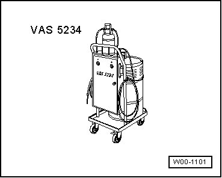
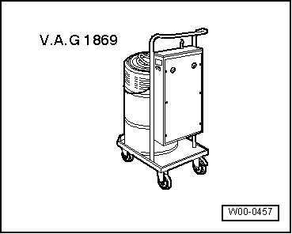
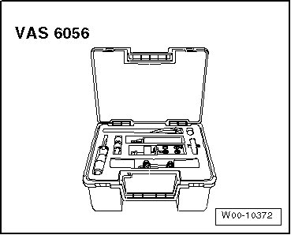
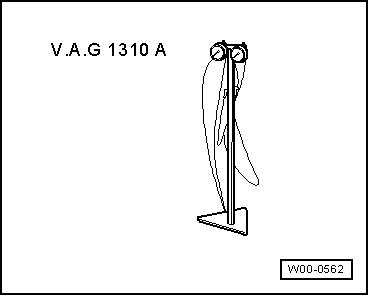

Hydraulic System: Tools and Equipment
Special Tools
Special tools, testers and auxiliary items required
• Brake charger/bleeder unit (VAS 5234)

• or Brake charger/bleeder unit (VAG 1869)
• Suction adapters (VAG 1869/4)

• Flaring tool (VAS 6056)

• Brake pressure gauge 0-250 bar (VAG 1310 A)

• Trim removal wedge (3409)

• Piston resetting tool (T10145)